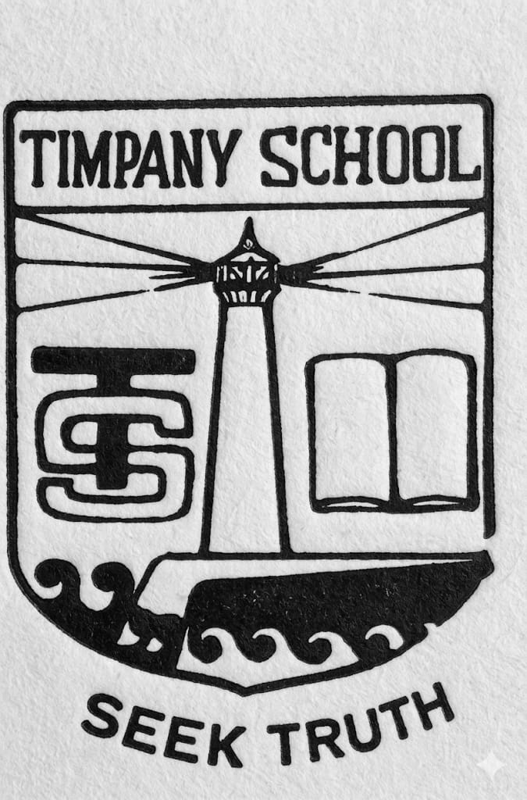

Founded in 1931 by Rev. A.E. Timpany of the Canadian Baptist Mission — what began as a small mission school grew, under Miss. Mercy Jeyaraja Rao's stewardship, into a Visakhapatnam landmark whose alumni call themselves Timpots wherever in the world they land.
Drawn from recollections shared by alumni in the Timpots Forever group chat.
Timpany School in Visakhapatnam (Vizag) traces its origins to the Canadian Baptist Mission (CBM) and the work of the Reverend Timpany. Mrudula tells the group that “Rev Timpany started the school in 1931.” In its earliest years, the school went by other names. Damu (who joined in 1959) recalls that what is now Timpany was then “the Anglo Indian Primary Middle School,” with classes from Nursery to 1st standard located close to Soldierpet (an area still known by that name to long-time residents). “St. John's was in Thomson Street,” he says — meaning Std 3 and above were taught inside the St. John's Church premises on Thompson Street, near the head post office and one-town police station. Banashree Bose Bhadra remembers that “when I joined the school in 1962 in grade 2 … it was St. John's school.” Damu thinks the school was renamed Timpany around 1963; Chris recalls the name “Timpots” being in circulation as early as the early 1960s.
The institution then moved to its new campus at Asilmetta / Uplands. Annapurna Banerjee, who joined in 3rd standard with “five students in the 9th standard,” remembers that her batch shifted to the new campus the following year — sometimes Miss. Jeyaraja Rao would ride to school with her family. Mahesh Allam joined KG in 1966 at the new building. Mrudula notes that the old Dutch-looking bungalow within CBM Compound (the “Ladies Bungalow,” as William Edwin clarifies — built by the Canadian Baptist missionaries, not the Dutch) was later inaugurated as the primary / junior school; Shankar Mathur places that inauguration around 1975, when his batch was in XI.
Damu mentions that Miss. Jeyaraja Rao joined the school as Headmistress in 1954 (with Ms. Clark, the CBM Director, as Principal); the following year, around 1962/63, she took charge as Principal from Ms. Clark. Lucy Rachel recalls Jazz becoming Principal a year after she joined Class 3. Piyush (“Mickey”) Nair says his mother Mrs. Pushpalata Nair joined Timpany at the old town location, likely 1963/64. Mrs. Harshalatha Chiranjeevi — who served the school for fifty years across all three campuses (Teacher 14 years, Vice Principal 8, Principal 8, Director 4) — joined as a teacher on 21 January 1970, when the new Asilmetta site was, as she puts it, “almost a jungle. Now of course it's a concrete jungle.” Steel City School, the Timpany branch in Ukkunagaram, opened in 1993; Banashree taught there briefly.
By the late 1960s the school had become co-educational on the Vizag Christian-school circuit alongside St. Aloysius (boys), St. Joseph's (girls) and the Fort Convent — Timpany, as Neelu Murthy notes, “was the only co-ed convent in town.” Boys who travelled from Waltair junction to Vizagapatam station on the Raipur Passenger train called themselves Timpots even then (Chris).
Several alumni remember Timpany under Jeyaraja Rao as the first school in the region — possibly the first in India — to introduce softball / baseball. “Under her leadership, Softball or Baseball — Not Bazball — was introduced, likely among the first schools in India to do so,” writes Jaisurya Mamidanna (Class of 1973, Mercury). Sri Devi Susarla was awe-struck watching senior Hazari practise the pole vault: “Never saw any school have pole vaulting in this part of the world.” Sandhya Gautam remembers the dangerous incident when classmate Peter D'Brass, practising the pole vault unsupervised after school, had the tip of the pole rip through his cheek; equipment was locked up after-hours from then on.
The four houses were Jupiter (blue), Mercury (yellow), Neptune (green) and Pluto (red). After 2006, when Pluto lost planetary status, the house was renamed Venus, as Samith Vellanki (Class of 2024) confirms. The school colours and crest carry “Persevere to conquer” themes.

Around 1979, Timpany's early shield-style crest gave way to the simpler emblem still in use today. The original — a lighthouse flanked by a TS monogram and an open book, ringed by waves and the motto “Seek Truth” — was replaced by an open book bearing the motto with a flame of learning above and waves below. The waves and motto carried over; the lighthouse, monogram and ornate framing did not.
Lakshmi Sarma recalls that the 1968 ISC batch had just four students — Azeez Mehdi, Srikumar, Kiran Sharma and herself. Ganga Ramanathan says, “ISC classes used to be in single digit in the early days.” Patta Saroj writes that “a batch of 24 students started their journey from January 1966 till December 1974,” with 22 passing out in December 1974. Sandhya Gautam adds: “Ours (1976) was the last batch of Senior Cambridge (11 years)” and “I think the first batch that had Telugu as an option in the boards (ISC).” Pramila David belonged to the very first ISC batch in 1965, which also included Suguna Kannan (the first ISC topper) — both passed out from the CBM Compound site. Suguna Kannan went on to head the Home Science department at St. Joseph's College. Joseph Polimetla recalls that Timpany did not yet have its own ISC exam centre then; students had to write their ISC papers at St. Joseph's Girls' High School.
Mrudula and others remember the school song. Multiple versions of the lyrics circulated over the years, but the original — contributed by Esther Jean Rajaratnam and Anila Narla — opens:
We are of Timpany School,
Seek Truth our Golden Rule,
With open hearts and minds so free
Our lofty goals we seek …
Chorus:
We will work, we will pray,
We will help build everyday
A school where deeds of truth are sown
And the Saviour's love is known.
Patta Saroj recalls that the very first line in her time was “With truth our golden rule / Life here is full of smiles and glee / Because we are so free.” Evangeline Sushma remembers a Golden Jubilee anthem: “Fifty years of Timpany's progress we celebrate now this year / God has been our guide and refuge ever faithful, ever true …” Rahul Ganapati shared “Love in Any Language,” a song composed by the school choir with choir master Jeffrey Kirk for Timpany's 70th anniversary, with the line: “Timpany School's love for children, fluently spoken here.”
The Chapel was constructed during Mrs. Chiranjeevi's tenure, with Mr. P. Vishnu Kumar Raju (MLA) instrumental in funding it. Mrs. Laxmi Kumar was the first ICT teacher at Timpany — Miss. Jeyaraja Rao sent her to Bangalore to train with Eiko Computer Centre, who then set up the first computer lab adjoining her office, making Timpany one of the first schools in India to offer ICT in the high school curriculum.
The Naval Band played every year for the final Sports Day march past (Saroj). The school uniform evolved: boys had to be at least 5 feet tall or in Grade 11 to wear trousers instead of shorts; girls wore maroon skirts (Ravi Mamidanna). By 11th/12th some girls in later years also wore maroon trousers. Long-time providers to Timpany included Valex Soman and Gupta Brothers (notebooks and textbooks every June), Sun n Moon for last-minute project supplies, and Vani Emporium for stationery. The “Uplands Corner” eatery, run by Mrs. Oomana Paul (Renu Paul's mother), later became Kit Kat — famous for burgers and samosas worth risking a gate-pass for.
A directory of the staff our alumni remember — subjects taught, years of service, and biographical notes. 66 entries in all.